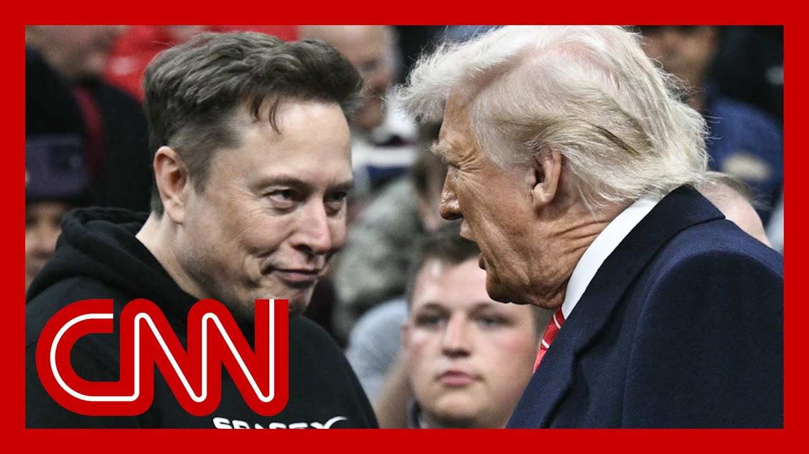

【洛杉矶抗议活动促使埃隆·马斯克向特朗普总统靠拢】
Summary: The protests in Los Angeles are influencing Elon Musk to soften his stance toward President Trump, despite their recent feud, as both have mutual business and political interests at stake.
摘要： 洛杉矶的抗议活动正促使埃隆·马斯克对特朗普总统的态度软化，尽管他们最近有过争执，但双方在商业和政治上存在共同的利益。

⏱️ Estimated Reading Time: 12 min
📚 六级生词 📚 雅思生词 📚 托福生词 📚 专八生词 📚 SAT生词 📚 考研生词 📚 GRE生词 📚 高考生词 📚 视频里的生词
The heated standoff between Elon Musk and President Trump may be cooling.
埃隆·马斯克与特朗普总统之间的激烈对峙可能正在降温。
It seems the protests in Los Angeles are actually playing a part in all of this.
洛杉矶的抗议活动似乎在其中起到了作用。
Musk appeared to wholeheartedly support the Trump administration's stance on what they're doing in Los Angeles.
马斯克似乎全力支持特朗普政府对洛杉矶局势的立场。
He added American flags to a post from Vice President J.D. Vance about how the president will not tolerate rioting and violence.
他在副总统J.D.万斯关于总统不会容忍骚乱和暴力的帖子中添加了美国国旗。
And then a response to a clip that shows Trump wishing Musk very well.
随后，他回应了一段显示特朗普对马斯克表示祝福的视频片段。
The tech mogul posted.
这位科技巨头发帖回应。
Yes, a heart emoji.
是的，一个爱心表情符号。
Heart emoji.
爱心表情符号。
Oh, it was just last week that Musk was calling for President Trump to be impeached.
就在上周，马斯克还呼吁弹劾特朗普总统。
Musk also dropped what he called the really big bomb, posting without evidence that Donald Trump's name appeared in documents related to Jeffrey Epstein.
马斯克还抛出了他所谓的“重磅炸弹”，在毫无证据的情况下发帖称唐纳德·特朗普的名字出现在与杰弗里·爱泼斯坦有关的文件中。
Posts that over the weekend were deleted.
这些帖子在周末被删除。
Joining us now is CNN contributor Kara Swisher, host of On and Pivot podcast.
现在加入我们的是CNN撰稿人、《On and Pivot》播客主持人卡拉·斯威舍。
She has covered Elon Musk extensively.
她长期跟踪报道埃隆·马斯克。
Kara, why do you think these two, or at least Musk, seems to be publicly softening his tone?
卡拉，为什么你认为这两人，至少是马斯克，似乎在公开场合缓和了语气？
Do you think there's more to that behind the scenes?
你认为背后还有更多原因吗？
Sure.
当然。
Has.
他的企业正面临巨大风险。
His businesses are at risk and deep risk.
他的企业正处于巨大风险之中。
Trump could do enormous damage to Tesla.
特朗普可能对特斯拉造成巨大损害。
That's already not just Tesla, but all his businesses, Starlink and others.
这不仅涉及特斯拉，还包括他的所有企业，如星链等。
I, he's realized, you know, after he had his incident, I guess I don't know what it is, his bender or whatever you want to call it.
我想他意识到了，在他经历了一些事情之后——我不知道具体是什么，可能是他的放纵行为或其他什么。
He can't do this because Trump could cause him great pain.
他不能再这样做了，因为特朗普可能给他带来巨大痛苦。
whether it's investigations or contracts or other things, especially as his own businesses are struggling.
无论是调查、合同还是其他事情，尤其是在他自己的企业陷入困境时。
even if even though Tesla shares went up, the fundamentals are really bad and it's got it got downgraded.
尽管特斯拉股价上涨，但其基本面非常糟糕，并且已被降级。
certain people have left the company and people are doing the robotics thing.
一些人已经离开了公司，而其他人正在从事机器人项目。
He's got this launch of robo taxis that probably is not going to be as big as promised.
他推出的机器人出租车可能不会像承诺的那样成功。
So he really needs to stay on Donald Trump's good side.
因此，他确实需要与唐纳德·特朗普保持良好关系。
Yeah.
是的。
And then, Trump was, of course, asked about Starlink yesterday.
昨天，特朗普当然被问及星链。
And, you know, he just kept very, he played very nice about it.
你知道，他表现得非常友好。
I do wonder, does this go both ways?
我想知道，这是否是双向的？
I mean, is, is Trump is the Trump administration reliant on Starlink?
我的意思是，特朗普政府是否依赖星链？
And also the fact that, you know, Elon Musk has markets with other countries, of course, as well.
此外，埃隆·马斯克在其他国家也有市场。
How does that play here?
这在这里如何发挥作用？
Well, they are reliant the you as the US government is quite reliant on not just Starlink but the, the rocket stuff that they need to have to bring these satellites or to the International Space Station, etc..
美国政府不仅依赖星链，还依赖火箭技术来发射卫星或前往国际空间站等。
So he does have leverage here.
因此，他确实有筹码。
It's not like it's just anybody leaving the white House.
这不像随便一个人离开白宫。
He's got money, he's got means and everything else.
他有钱，有资源，还有其他一切。
But the fact the matter is Trump wasn't too nice, if you noticed, he's like, yeah.
但事实上，特朗普并不太友好，如果你注意到的话，他只是敷衍。
When they asked about the drug issues, he's like, I don't know.
当被问及毒品问题时，他说“我不知道”。
He could have said, no, absolutely not.
他本可以说“不，绝对没有”。
He said, I don't know.
他说“我不知道”。
I don't think so.
我不这么认为。
I wish him well.
我祝他一切顺利。
That's what you might say to an accident.
这是你对一个意外事件可能会说的话。
Not really interested in coming back.
并不是真的有兴趣回来。
so that's why Musk has been so thirsty on Twitter.
这就是为什么马斯克在推特上如此急切。
complimenting Donald Trump.
称赞唐纳德·特朗普。
It's somewhat comical to watch him do it at be.
看着他这样做有点滑稽。
So, you know, obsequious to Donald Trump.
你知道，对唐纳德·特朗普阿谀奉承。
But he also believes those things, too.
但他也相信这些。
So it's probably easy in that regard.
因此，在这方面可能很容易。
Well, soon after the falling out went public, I heard you say on CNN that you thought that, Trump used Musk and that there has to be some, some level of at least awareness within the Trump administration of what Musk is capable of it, because, as you put it, he has money and means in the way that other folks that Trump in your eyes has used before, right?
在公开闹翻后不久，我听你在CNN上说，你认为特朗普利用了马斯克，而且特朗普政府内部至少在一定程度上意识到马斯克的能力，因为正如你所说，他有钱和资源，就像特朗普以前利用过的其他人一样，对吧？
What do you think Musk might.
你认为马斯克可能会做什么？
Yeah, I, I he could do a lot of things.
是的，我认为他可以做很多事情。
I mean, he definitely is the only choice when it comes to rockets right now.
我的意思是，在火箭方面，他目前绝对是唯一的选择。
Of course, the Trump administration has been pushing for other competitors, which is probably smart in any case, whether it's Elon Musk or anybody else.
当然，特朗普政府一直在推动其他竞争对手，这在任何情况下都可能是明智的，无论是埃隆·马斯克还是其他人。
you know, he could he has money, he could start making trouble.
你知道，他有钱，他可以开始制造麻烦。
He could, you know, he may have another incident.
他可能会再次出事。
But like especially over tariffs he's very anti tariff.
但特别是在关税问题上，他非常反对关税。
I don't know if you can hold it in on, on the deficit stuff if this bill passes.
我不知道如果这项法案通过，他是否能在赤字问题上保持沉默。
he could quietly call senators.
他可以悄悄打电话给参议员。
He could do all kinds of manner of things.
他可以做各种各样的事情。
So they've got to keep him sort of at least in a box.
因此，他们必须至少把他控制在某种范围内。
and somewhat happy, I guess.
我想，还要让他稍微满意。
And he certainly has to keep this sort of mutually assured destruction in this case.
在这种情况下，他当然必须保持这种“相互确保摧毁”的关系。
Donald Trump definitely has the upper hand, but Musk is not without his power.
唐纳德·特朗普绝对占上风，但马斯克也不是没有影响力。
and so he's trying to wedge his way back in there.
因此，他正试图重新挤进去。
I don't think he's going to get back in largely that Epstein thing.
我认为他不太可能重新获得信任，主要是因为爱泼斯坦事件。
Even if he took it down, everybody saw it.
即使他删除了帖子，大家都看到了。
and then saying that, that he, that Trump owed his presidency to, to Musk, that's probably a No-No with Donald Trump.
然后说特朗普的总统职位归功于马斯克，这对唐纳德·特朗普来说可能是禁忌。
So I don't I think they'll keep him close, but not, you know, I'll keep him close.
所以我认为他们会与他保持亲近，但不会太亲近。
I don't think he's an enemy, but he's certainly not the friend he was since this friendship, really intensified.
我不认为他是敌人，但他肯定不再是以前那种亲密朋友了。
You've been saying, just wait.
你一直在说“等着瞧”。
you've been saying that all along.
你一直这么说。
Kara.
卡拉。
And I wonder how you think history is going to be looking at this episode and this friendship.
我想知道你认为历史将如何看待这段插曲和这段友谊。
Well, it's very unprecedented.
这是非常前所未有的。
The idea of the world's richest man staying at the Lincoln Bedroom a lot and having an office and, you know, at the white House.
世界上最富有的人经常住在林肯卧室，并在白宫拥有办公室。
Crazy.
疯狂。
It's it's incredible.
这令人难以置信。
I mean, like the big, oligarchs of old would love to have that kind of access.
我的意思是，过去的寡头们会喜欢这种特权。
That said, Musk made him a nuisance, made himself a nuisance.
话虽如此，马斯克让自己成了一个麻烦。
He, he alienated lots of cabinet members, including the Secretary of the Treasury, Scott Vincent, and also Marco Rubio and others.
他疏远了许多内阁成员，包括财政部长斯科特·文森特、马可·鲁比奥等人。
And then I think ultimately behind the scenes, my guess would be Susie Wiles probably had a lot to do with this.
我认为最终在幕后，苏茜·怀尔斯可能与此有很大关系。
I'm sure she was not a fan of of his high jinks and the trouble that he could bring.
我确定她不喜欢他的恶作剧和他可能带来的麻烦。
But again, you have to keep him somewhat satisfied, because he could mouth off on any number of things and cause problems for the Trump I.
但你必须让他保持一定程度的满意，因为他可能会对很多事情发表意见，给特朗普政府带来麻烦。
I wonder what he'll do if the tariffs continue.
我想知道如果关税继续，他会怎么做。
He really he's really quite adamant anti-terror if and even when he was inside the tent he was calling Peter Navarro a moron on Twitter.
他非常反对关税，甚至在他还是内部人士时就在推特上称彼得·纳瓦罗为白痴。
I don't know if he can control himself on things like that.
我不知道他能否在这种事情上控制自己。
And I agree with him on that one quickly.
在这一点上，我很快同意他的观点。
Kara, do you think he's serious about starting a third party?
卡拉，你认为他是认真的要成立第三政党吗？
You know, I just think he just was trying to be a little threatening, I guess.
我认为他只是想稍微威胁一下。
You know, I suspect the problem is Musk overestimates his political capital.
我认为问题在于马斯克高估了自己的政治资本。
Right?
对吧？
Compared to Trump.
与特朗普相比。
And Trump understands political capital.
而特朗普理解政治资本。
And when he lost in Wisconsin, it was a big tell is that he didn't have any money.
当他在威斯康星州失败时，这清楚地表明他没有资金。
It wasn't enough.
这还不够。
And he's certainly not charming, politically speaking.
从政治角度来说，他当然没有魅力。
And so, you know, Trump has a lot of political power, whether you like him or not.
因此，无论你是否喜欢他，特朗普都有很大的政治权力。
He has.
他有。
He does.
他确实有。
And he understands that.
他明白这一点。
and so in that regard, you know, maybe he could start it.
因此，在这方面，也许他可以成立第三政党。
But I don't I don't think Musk has a small constituency, And, he certainly has fans and but he also has a lot of detractors.
但我不认为马斯克的支持者很少，他当然有粉丝，但也有许多批评者。
you know, I suspect he's probably just doing that as a threat, possibly some terrorist threats, an empty threat as far as I can.
我认为他可能只是作为一种威胁，可能是某种恐怖威胁，在我看来是空洞的威胁。
I always appreciate your point of view.
我一直很欣赏你的观点。
Thanks for joining us.
感谢加入我们。
Thank you.
谢谢。